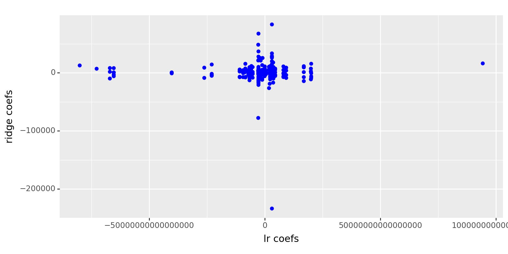
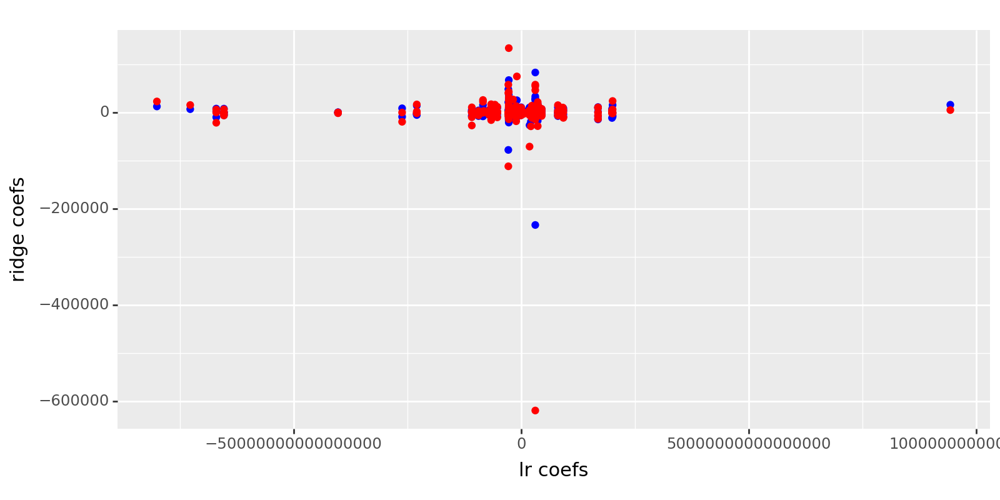
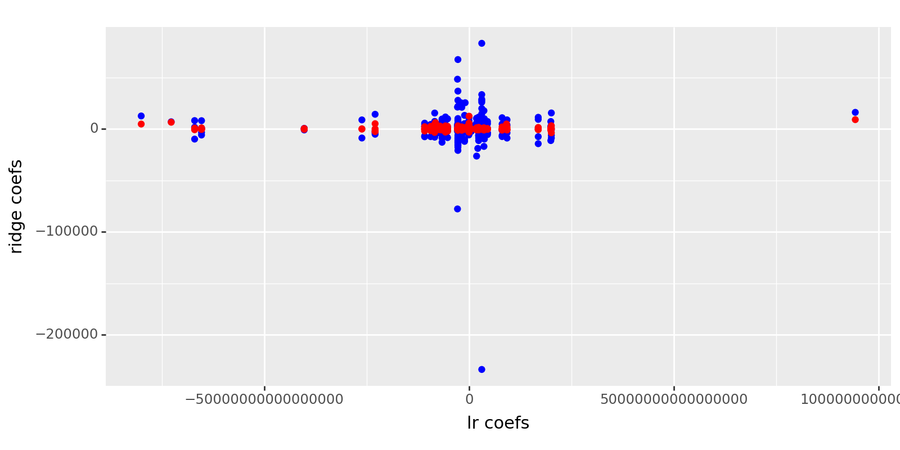

import pandas as pd
import numpy as np
from sklearn.pipeline import Pipeline
from sklearn.compose import make_column_selector, ColumnTransformer
from sklearn.preprocessing import StandardScaler, OneHotEncoder, PolynomialFeatures
from sklearn.linear_model import LinearRegression, Ridge, Lasso, ElasticNet
from sklearn.model_selection import train_test_split, cross_val_score
from sklearn.metrics import r2_scoreames = pd.read_csv("https://www.dropbox.com/scl/fi/g0n5le5p6fr136ggetfsf/AmesHousing.csv?rlkey=jlr9xtz1o6u5rghfo29a5c02f&dl=1")
# Get rid of columns with mostly NaN values
good_cols = ames.isna().sum() < 100
ames = ames.loc[:,good_cols]
# Drop other NAs
ames = ames.dropna()ames.head()| Order | PID | MS SubClass | MS Zoning | Lot Area | Street | Lot Shape | Land Contour | Utilities | Lot Config | ... | Enclosed Porch | 3Ssn Porch | Screen Porch | Pool Area | Misc Val | Mo Sold | Yr Sold | Sale Type | Sale Condition | SalePrice | |
|---|---|---|---|---|---|---|---|---|---|---|---|---|---|---|---|---|---|---|---|---|---|
| 0 | 1 | 526301100 | 20 | RL | 31770 | Pave | IR1 | Lvl | AllPub | Corner | ... | 0 | 0 | 0 | 0 | 0 | 5 | 2010 | WD | Normal | 215000 |
| 1 | 2 | 526350040 | 20 | RH | 11622 | Pave | Reg | Lvl | AllPub | Inside | ... | 0 | 0 | 120 | 0 | 0 | 6 | 2010 | WD | Normal | 105000 |
| 2 | 3 | 526351010 | 20 | RL | 14267 | Pave | IR1 | Lvl | AllPub | Corner | ... | 0 | 0 | 0 | 0 | 12500 | 6 | 2010 | WD | Normal | 172000 |
| 3 | 4 | 526353030 | 20 | RL | 11160 | Pave | Reg | Lvl | AllPub | Corner | ... | 0 | 0 | 0 | 0 | 0 | 4 | 2010 | WD | Normal | 244000 |
| 4 | 5 | 527105010 | 60 | RL | 13830 | Pave | IR1 | Lvl | AllPub | Inside | ... | 0 | 0 | 0 | 0 | 0 | 3 | 2010 | WD | Normal | 189900 |
5 rows × 71 columns
X = ames.drop(["SalePrice", "Order", "PID"], axis = 1)
y = ames["SalePrice"]
ct = ColumnTransformer(
[
("dummify",
OneHotEncoder(sparse_output = False, handle_unknown='ignore'),
make_column_selector(dtype_include=object)),
("standardize",
StandardScaler(),
make_column_selector(dtype_include=np.number))
],
remainder = "passthrough"
)
lr_pipeline_1 = Pipeline(
[("preprocessing", ct),
("linear_regression", LinearRegression())]
)cross_val_score(lr_pipeline_1, X, y, cv = 5, scoring = 'r2')array([-4.59217770e+20, -1.21723181e+20, -8.37868327e+19, -9.71584476e+20,
-3.78389822e+20])ct = ColumnTransformer(
[
("dummify",
OneHotEncoder(sparse_output = False, handle_unknown='ignore'),
make_column_selector(dtype_include=object)),
("standardize",
StandardScaler(),
make_column_selector(dtype_include=np.number))
],
remainder = "passthrough"
)
ridge_pipeline_1 = Pipeline(
[("preprocessing", ct),
("Ridge", Ridge(1))]
)cross_val_score(ridge_pipeline_1, X, y, cv = 5, scoring = 'r2')array([0.8983804 , 0.91749817, 0.79251623, 0.78248152, 0.91492025])lr_fit = lr_pipeline_1.fit(X,y)
lr_coefs = lr_fit.named_steps['linear_regression'].coef_ridge_fit = ridge_pipeline_1.fit(X,y)
ridge_coefs = ridge_fit.named_steps['Ridge'].coef_coefs = pd.DataFrame({"lr coefs": lr_coefs, "ridge coefs": ridge_coefs})from plotnine import *
(
ggplot(coefs)
+ aes(x='lr coefs')
+ geom_point(aes(y='ridge coefs'), color='blue') # First y variable
+ theme(figure_size=(8, 4))
)
<Figure Size: (800 x 400)>from sklearn.model_selection import GridSearchCV
ct = ColumnTransformer(
[
("dummify",
OneHotEncoder(sparse_output = False, handle_unknown='ignore'),
make_column_selector(dtype_include=object)),
("standardize",
StandardScaler(),
make_column_selector(dtype_include=np.number))
],
remainder = "passthrough"
)
ridge_pipeline_1 = Pipeline(
[("preprocessing", ct),
("Ridge", Ridge())]
)
lambdas = {'Ridge__alpha': [.001,.01,.1,1,10,100]}
gscv1 = GridSearchCV(ridge_pipeline_1, lambdas, cv = 5, scoring='r2')gscv_fitted = gscv1.fit(X, y)gscv_fitted.cv_results_['mean_test_score']array([0.85294546, 0.85322362, 0.85542319, 0.86115931, 0.86335485,
0.85712911])pd.DataFrame(data = {"lambdas": [.001,.01,.1,1,10,100], "scores": gscv_fitted.cv_results_['mean_test_score']})| lambdas | scores | |
|---|---|---|
| 0 | 0.001 | 0.852945 |
| 1 | 0.010 | 0.853224 |
| 2 | 0.100 | 0.855423 |
| 3 | 1.000 | 0.861159 |
| 4 | 10.000 | 0.863355 |
| 5 | 100.000 | 0.857129 |
ct = ColumnTransformer(
[
("dummify",
OneHotEncoder(sparse_output = False, handle_unknown='ignore'),
make_column_selector(dtype_include=object)),
("standardize",
StandardScaler(),
make_column_selector(dtype_include=np.number))
],
remainder = "passthrough"
)
lasso_pipeline_1 = Pipeline(
[("preprocessing", ct),
("Lasso", Lasso())]
)
lasso = {'Lasso__alpha': [.001,.01,.1,1,10,100]}
gscv2 = GridSearchCV(lasso_pipeline_1, lasso, cv = 5, scoring='r2')gscv_fitted2 = gscv2.fit(X, y)/usr/local/lib/python3.10/dist-packages/sklearn/linear_model/_coordinate_descent.py:631: ConvergenceWarning: Objective did not converge. You might want to increase the number of iterations, check the scale of the features or consider increasing regularisation. Duality gap: 2.103e+11, tolerance: 1.348e+09
/usr/local/lib/python3.10/dist-packages/sklearn/linear_model/_coordinate_descent.py:631: ConvergenceWarning: Objective did not converge. You might want to increase the number of iterations, check the scale of the features or consider increasing regularisation. Duality gap: 3.098e+11, tolerance: 1.474e+09
/usr/local/lib/python3.10/dist-packages/sklearn/linear_model/_coordinate_descent.py:631: ConvergenceWarning: Objective did not converge. You might want to increase the number of iterations, check the scale of the features or consider increasing regularisation. Duality gap: 1.871e+11, tolerance: 1.463e+09
/usr/local/lib/python3.10/dist-packages/sklearn/linear_model/_coordinate_descent.py:631: ConvergenceWarning: Objective did not converge. You might want to increase the number of iterations, check the scale of the features or consider increasing regularisation. Duality gap: 1.734e+11, tolerance: 1.407e+09
/usr/local/lib/python3.10/dist-packages/sklearn/linear_model/_coordinate_descent.py:631: ConvergenceWarning: Objective did not converge. You might want to increase the number of iterations, check the scale of the features or consider increasing regularisation. Duality gap: 2.553e+11, tolerance: 1.477e+09
/usr/local/lib/python3.10/dist-packages/sklearn/linear_model/_coordinate_descent.py:631: ConvergenceWarning: Objective did not converge. You might want to increase the number of iterations, check the scale of the features or consider increasing regularisation. Duality gap: 2.104e+11, tolerance: 1.348e+09
/usr/local/lib/python3.10/dist-packages/sklearn/linear_model/_coordinate_descent.py:631: ConvergenceWarning: Objective did not converge. You might want to increase the number of iterations, check the scale of the features or consider increasing regularisation. Duality gap: 3.099e+11, tolerance: 1.474e+09
/usr/local/lib/python3.10/dist-packages/sklearn/linear_model/_coordinate_descent.py:631: ConvergenceWarning: Objective did not converge. You might want to increase the number of iterations, check the scale of the features or consider increasing regularisation. Duality gap: 1.963e+11, tolerance: 1.463e+09
/usr/local/lib/python3.10/dist-packages/sklearn/linear_model/_coordinate_descent.py:631: ConvergenceWarning: Objective did not converge. You might want to increase the number of iterations, check the scale of the features or consider increasing regularisation. Duality gap: 1.735e+11, tolerance: 1.407e+09
/usr/local/lib/python3.10/dist-packages/sklearn/linear_model/_coordinate_descent.py:631: ConvergenceWarning: Objective did not converge. You might want to increase the number of iterations, check the scale of the features or consider increasing regularisation. Duality gap: 1.536e+11, tolerance: 1.477e+09
/usr/local/lib/python3.10/dist-packages/sklearn/linear_model/_coordinate_descent.py:631: ConvergenceWarning: Objective did not converge. You might want to increase the number of iterations, check the scale of the features or consider increasing regularisation. Duality gap: 2.213e+11, tolerance: 1.348e+09
/usr/local/lib/python3.10/dist-packages/sklearn/linear_model/_coordinate_descent.py:631: ConvergenceWarning: Objective did not converge. You might want to increase the number of iterations, check the scale of the features or consider increasing regularisation. Duality gap: 1.558e+11, tolerance: 1.474e+09
/usr/local/lib/python3.10/dist-packages/sklearn/linear_model/_coordinate_descent.py:631: ConvergenceWarning: Objective did not converge. You might want to increase the number of iterations, check the scale of the features or consider increasing regularisation. Duality gap: 1.877e+11, tolerance: 1.463e+09
/usr/local/lib/python3.10/dist-packages/sklearn/linear_model/_coordinate_descent.py:631: ConvergenceWarning: Objective did not converge. You might want to increase the number of iterations, check the scale of the features or consider increasing regularisation. Duality gap: 1.677e+11, tolerance: 1.407e+09
/usr/local/lib/python3.10/dist-packages/sklearn/linear_model/_coordinate_descent.py:631: ConvergenceWarning: Objective did not converge. You might want to increase the number of iterations, check the scale of the features or consider increasing regularisation. Duality gap: 1.539e+11, tolerance: 1.477e+09
/usr/local/lib/python3.10/dist-packages/sklearn/linear_model/_coordinate_descent.py:631: ConvergenceWarning: Objective did not converge. You might want to increase the number of iterations, check the scale of the features or consider increasing regularisation. Duality gap: 1.688e+10, tolerance: 1.474e+09
/usr/local/lib/python3.10/dist-packages/sklearn/linear_model/_coordinate_descent.py:631: ConvergenceWarning: Objective did not converge. You might want to increase the number of iterations, check the scale of the features or consider increasing regularisation. Duality gap: 2.393e+10, tolerance: 1.463e+09
/usr/local/lib/python3.10/dist-packages/sklearn/linear_model/_coordinate_descent.py:631: ConvergenceWarning: Objective did not converge. You might want to increase the number of iterations, check the scale of the features or consider increasing regularisation. Duality gap: 3.582e+10, tolerance: 1.477e+09pd.DataFrame(data = {"Lasso": [.001,.01,.1,1,10,100], "scores": gscv_fitted2.cv_results_['mean_test_score']})| Lasso | scores | |
|---|---|---|
| 0 | 0.001 | 0.854440 |
| 1 | 0.010 | 0.854549 |
| 2 | 0.100 | 0.855394 |
| 3 | 1.000 | 0.855890 |
| 4 | 10.000 | 0.859495 |
| 5 | 100.000 | 0.866170 |
Lasso_fit = lasso_pipeline_1.fit(X,y)
Lasso_coefs = Lasso_fit.named_steps['Lasso'].coef_/usr/local/lib/python3.10/dist-packages/sklearn/linear_model/_coordinate_descent.py:631: ConvergenceWarning: Objective did not converge. You might want to increase the number of iterations, check the scale of the features or consider increasing regularisation. Duality gap: 1.980e+10, tolerance: 1.793e+09coefs['lasso coefs'] = Lasso_coefs(
ggplot(coefs)
+ aes(x='lr coefs')
+ geom_point(aes(y='ridge coefs'), color='blue') # First y variable
+ geom_point(aes(y='lasso coefs'), color='red')
+ theme(figure_size=(8, 4))
)
<Figure Size: (800 x 400)>ct = ColumnTransformer(
[
("dummify",
OneHotEncoder(sparse_output = False, handle_unknown='ignore'),
make_column_selector(dtype_include=object)),
("standardize",
StandardScaler(),
make_column_selector(dtype_include=np.number))
],
remainder = "passthrough"
)
EN_pipeline_1 = Pipeline(
[("preprocessing", ct),
("Elastic_Net", ElasticNet())]
)
EN = {'Elastic_Net__alpha': [.001,.01,.1,1,10,100], "Elastic_Net__l1_ratio": [.001,.01,.1,1,10,100]}
gscv3 = GridSearchCV(EN_pipeline_1, EN, cv = 5, scoring='r2')gscv_fitted3 = gscv3.fit(X, y)/usr/local/lib/python3.10/dist-packages/sklearn/linear_model/_coordinate_descent.py:631: ConvergenceWarning: Objective did not converge. You might want to increase the number of iterations, check the scale of the features or consider increasing regularisation. Duality gap: 6.497e+11, tolerance: 1.348e+09
/usr/local/lib/python3.10/dist-packages/sklearn/linear_model/_coordinate_descent.py:631: ConvergenceWarning: Objective did not converge. You might want to increase the number of iterations, check the scale of the features or consider increasing regularisation. Duality gap: 7.277e+11, tolerance: 1.474e+09
/usr/local/lib/python3.10/dist-packages/sklearn/linear_model/_coordinate_descent.py:631: ConvergenceWarning: Objective did not converge. You might want to increase the number of iterations, check the scale of the features or consider increasing regularisation. Duality gap: 6.083e+11, tolerance: 1.463e+09
/usr/local/lib/python3.10/dist-packages/sklearn/linear_model/_coordinate_descent.py:631: ConvergenceWarning: Objective did not converge. You might want to increase the number of iterations, check the scale of the features or consider increasing regularisation. Duality gap: 5.351e+11, tolerance: 1.407e+09
/usr/local/lib/python3.10/dist-packages/sklearn/linear_model/_coordinate_descent.py:631: ConvergenceWarning: Objective did not converge. You might want to increase the number of iterations, check the scale of the features or consider increasing regularisation. Duality gap: 7.263e+11, tolerance: 1.477e+09
/usr/local/lib/python3.10/dist-packages/sklearn/linear_model/_coordinate_descent.py:631: ConvergenceWarning: Objective did not converge. You might want to increase the number of iterations, check the scale of the features or consider increasing regularisation. Duality gap: 6.492e+11, tolerance: 1.348e+09
/usr/local/lib/python3.10/dist-packages/sklearn/linear_model/_coordinate_descent.py:631: ConvergenceWarning: Objective did not converge. You might want to increase the number of iterations, check the scale of the features or consider increasing regularisation. Duality gap: 7.273e+11, tolerance: 1.474e+09
/usr/local/lib/python3.10/dist-packages/sklearn/linear_model/_coordinate_descent.py:631: ConvergenceWarning: Objective did not converge. You might want to increase the number of iterations, check the scale of the features or consider increasing regularisation. Duality gap: 6.081e+11, tolerance: 1.463e+09
/usr/local/lib/python3.10/dist-packages/sklearn/linear_model/_coordinate_descent.py:631: ConvergenceWarning: Objective did not converge. You might want to increase the number of iterations, check the scale of the features or consider increasing regularisation. Duality gap: 5.347e+11, tolerance: 1.407e+09
/usr/local/lib/python3.10/dist-packages/sklearn/linear_model/_coordinate_descent.py:631: ConvergenceWarning: Objective did not converge. You might want to increase the number of iterations, check the scale of the features or consider increasing regularisation. Duality gap: 7.259e+11, tolerance: 1.477e+09
/usr/local/lib/python3.10/dist-packages/sklearn/linear_model/_coordinate_descent.py:631: ConvergenceWarning: Objective did not converge. You might want to increase the number of iterations, check the scale of the features or consider increasing regularisation. Duality gap: 6.447e+11, tolerance: 1.348e+09
/usr/local/lib/python3.10/dist-packages/sklearn/linear_model/_coordinate_descent.py:631: ConvergenceWarning: Objective did not converge. You might want to increase the number of iterations, check the scale of the features or consider increasing regularisation. Duality gap: 7.226e+11, tolerance: 1.474e+09
/usr/local/lib/python3.10/dist-packages/sklearn/linear_model/_coordinate_descent.py:631: ConvergenceWarning: Objective did not converge. You might want to increase the number of iterations, check the scale of the features or consider increasing regularisation. Duality gap: 6.058e+11, tolerance: 1.463e+09
/usr/local/lib/python3.10/dist-packages/sklearn/linear_model/_coordinate_descent.py:631: ConvergenceWarning: Objective did not converge. You might want to increase the number of iterations, check the scale of the features or consider increasing regularisation. Duality gap: 5.308e+11, tolerance: 1.407e+09
/usr/local/lib/python3.10/dist-packages/sklearn/linear_model/_coordinate_descent.py:631: ConvergenceWarning: Objective did not converge. You might want to increase the number of iterations, check the scale of the features or consider increasing regularisation. Duality gap: 7.213e+11, tolerance: 1.477e+09
/usr/local/lib/python3.10/dist-packages/sklearn/linear_model/_coordinate_descent.py:631: ConvergenceWarning: Objective did not converge. You might want to increase the number of iterations, check the scale of the features or consider increasing regularisation. Duality gap: 2.103e+11, tolerance: 1.348e+09
/usr/local/lib/python3.10/dist-packages/sklearn/linear_model/_coordinate_descent.py:631: ConvergenceWarning: Objective did not converge. You might want to increase the number of iterations, check the scale of the features or consider increasing regularisation. Duality gap: 3.098e+11, tolerance: 1.474e+09
/usr/local/lib/python3.10/dist-packages/sklearn/linear_model/_coordinate_descent.py:631: ConvergenceWarning: Objective did not converge. You might want to increase the number of iterations, check the scale of the features or consider increasing regularisation. Duality gap: 1.871e+11, tolerance: 1.463e+09
/usr/local/lib/python3.10/dist-packages/sklearn/linear_model/_coordinate_descent.py:631: ConvergenceWarning: Objective did not converge. You might want to increase the number of iterations, check the scale of the features or consider increasing regularisation. Duality gap: 1.734e+11, tolerance: 1.407e+09
/usr/local/lib/python3.10/dist-packages/sklearn/linear_model/_coordinate_descent.py:631: ConvergenceWarning: Objective did not converge. You might want to increase the number of iterations, check the scale of the features or consider increasing regularisation. Duality gap: 2.553e+11, tolerance: 1.477e+09
/usr/local/lib/python3.10/dist-packages/sklearn/linear_model/_coordinate_descent.py:631: ConvergenceWarning: Objective did not converge. You might want to increase the number of iterations, check the scale of the features or consider increasing regularisation. Duality gap: 2.104e+11, tolerance: 1.348e+09
/usr/local/lib/python3.10/dist-packages/sklearn/linear_model/_coordinate_descent.py:631: ConvergenceWarning: Objective did not converge. You might want to increase the number of iterations, check the scale of the features or consider increasing regularisation. Duality gap: 3.099e+11, tolerance: 1.474e+09
/usr/local/lib/python3.10/dist-packages/sklearn/linear_model/_coordinate_descent.py:631: ConvergenceWarning: Objective did not converge. You might want to increase the number of iterations, check the scale of the features or consider increasing regularisation. Duality gap: 1.963e+11, tolerance: 1.463e+09
/usr/local/lib/python3.10/dist-packages/sklearn/linear_model/_coordinate_descent.py:631: ConvergenceWarning: Objective did not converge. You might want to increase the number of iterations, check the scale of the features or consider increasing regularisation. Duality gap: 1.735e+11, tolerance: 1.407e+09
/usr/local/lib/python3.10/dist-packages/sklearn/linear_model/_coordinate_descent.py:631: ConvergenceWarning: Objective did not converge. You might want to increase the number of iterations, check the scale of the features or consider increasing regularisation. Duality gap: 1.536e+11, tolerance: 1.477e+09
/usr/local/lib/python3.10/dist-packages/sklearn/linear_model/_coordinate_descent.py:631: ConvergenceWarning: Objective did not converge. You might want to increase the number of iterations, check the scale of the features or consider increasing regularisation. Duality gap: 2.213e+11, tolerance: 1.348e+09
/usr/local/lib/python3.10/dist-packages/sklearn/linear_model/_coordinate_descent.py:631: ConvergenceWarning: Objective did not converge. You might want to increase the number of iterations, check the scale of the features or consider increasing regularisation. Duality gap: 1.558e+11, tolerance: 1.474e+09
/usr/local/lib/python3.10/dist-packages/sklearn/linear_model/_coordinate_descent.py:631: ConvergenceWarning: Objective did not converge. You might want to increase the number of iterations, check the scale of the features or consider increasing regularisation. Duality gap: 1.877e+11, tolerance: 1.463e+09
/usr/local/lib/python3.10/dist-packages/sklearn/linear_model/_coordinate_descent.py:631: ConvergenceWarning: Objective did not converge. You might want to increase the number of iterations, check the scale of the features or consider increasing regularisation. Duality gap: 1.677e+11, tolerance: 1.407e+09
/usr/local/lib/python3.10/dist-packages/sklearn/linear_model/_coordinate_descent.py:631: ConvergenceWarning: Objective did not converge. You might want to increase the number of iterations, check the scale of the features or consider increasing regularisation. Duality gap: 1.539e+11, tolerance: 1.477e+09
/usr/local/lib/python3.10/dist-packages/sklearn/linear_model/_coordinate_descent.py:631: ConvergenceWarning: Objective did not converge. You might want to increase the number of iterations, check the scale of the features or consider increasing regularisation. Duality gap: 1.688e+10, tolerance: 1.474e+09
/usr/local/lib/python3.10/dist-packages/sklearn/linear_model/_coordinate_descent.py:631: ConvergenceWarning: Objective did not converge. You might want to increase the number of iterations, check the scale of the features or consider increasing regularisation. Duality gap: 2.393e+10, tolerance: 1.463e+09
/usr/local/lib/python3.10/dist-packages/sklearn/linear_model/_coordinate_descent.py:631: ConvergenceWarning: Objective did not converge. You might want to increase the number of iterations, check the scale of the features or consider increasing regularisation. Duality gap: 3.582e+10, tolerance: 1.477e+09
/usr/local/lib/python3.10/dist-packages/sklearn/model_selection/_validation.py:378: FitFailedWarning:
60 fits failed out of a total of 180.
The score on these train-test partitions for these parameters will be set to nan.
If these failures are not expected, you can try to debug them by setting error_score='raise'.
Below are more details about the failures:
--------------------------------------------------------------------------------
30 fits failed with the following error:
Traceback (most recent call last):
File "/usr/local/lib/python3.10/dist-packages/sklearn/model_selection/_validation.py", line 686, in _fit_and_score
estimator.fit(X_train, y_train, **fit_params)
File "/usr/local/lib/python3.10/dist-packages/sklearn/pipeline.py", line 405, in fit
self._final_estimator.fit(Xt, y, **fit_params_last_step)
File "/usr/local/lib/python3.10/dist-packages/sklearn/linear_model/_coordinate_descent.py", line 892, in fit
self._validate_params()
File "/usr/local/lib/python3.10/dist-packages/sklearn/base.py", line 600, in _validate_params
validate_parameter_constraints(
File "/usr/local/lib/python3.10/dist-packages/sklearn/utils/_param_validation.py", line 97, in validate_parameter_constraints
raise InvalidParameterError(
sklearn.utils._param_validation.InvalidParameterError: The 'l1_ratio' parameter of ElasticNet must be a float in the range [0, 1]. Got 10 instead.
--------------------------------------------------------------------------------
30 fits failed with the following error:
Traceback (most recent call last):
File "/usr/local/lib/python3.10/dist-packages/sklearn/model_selection/_validation.py", line 686, in _fit_and_score
estimator.fit(X_train, y_train, **fit_params)
File "/usr/local/lib/python3.10/dist-packages/sklearn/pipeline.py", line 405, in fit
self._final_estimator.fit(Xt, y, **fit_params_last_step)
File "/usr/local/lib/python3.10/dist-packages/sklearn/linear_model/_coordinate_descent.py", line 892, in fit
self._validate_params()
File "/usr/local/lib/python3.10/dist-packages/sklearn/base.py", line 600, in _validate_params
validate_parameter_constraints(
File "/usr/local/lib/python3.10/dist-packages/sklearn/utils/_param_validation.py", line 97, in validate_parameter_constraints
raise InvalidParameterError(
sklearn.utils._param_validation.InvalidParameterError: The 'l1_ratio' parameter of ElasticNet must be a float in the range [0, 1]. Got 100 instead.
/usr/local/lib/python3.10/dist-packages/sklearn/model_selection/_search.py:952: UserWarning: One or more of the test scores are non-finite: [0.86238847 0.862378 0.86226397 0.8544398 nan nan
0.86274543 0.86276019 0.86290313 0.85454916 nan nan
0.85133226 0.85140795 0.85218856 0.85539429 nan nan
0.81188059 0.81220415 0.81545555 0.85589007 nan nan
0.53808438 0.5401286 0.56132712 0.85949508 nan nan
0.10093981 0.10183508 0.1116565 0.86617023 nan nan]gscv_fitted3.cv_results_['mean_test_score']array([0.86238847, 0.862378 , 0.86226397, 0.8544398 , nan,
nan, 0.86274543, 0.86276019, 0.86290313, 0.85454916,
nan, nan, 0.85133226, 0.85140795, 0.85218856,
0.85539429, nan, nan, 0.81188059, 0.81220415,
0.81545555, 0.85589007, nan, nan, 0.53808438,
0.5401286 , 0.56132712, 0.85949508, nan, nan,
0.10093981, 0.10183508, 0.1116565 , 0.86617023, nan,
nan])EN_fit = EN_pipeline_1.fit(X,y)
EN_coefs = EN_fit.named_steps['Elastic_Net'].coef_coefs['EN coefs'] = EN_coefscoefs.head()| lr coefs | ridge coefs | lasso_coefs | lasso coefs | EN coefs | |
|---|---|---|---|---|---|
| 0 | -6.831270e+13 | -5740.055372 | -5444.833735 | -5444.833735 | -142.792827 |
| 1 | -6.831270e+13 | 1511.928887 | 1531.072829 | 1531.072829 | 342.019719 |
| 2 | -6.831270e+13 | -5809.704488 | -5911.291084 | -5911.291084 | -20.383127 |
| 3 | -6.831270e+13 | 7676.327583 | 7040.522525 | 7040.522525 | -55.146816 |
| 4 | -6.831270e+13 | 3215.393618 | 3425.816827 | 3425.816827 | 1208.813230 |
(
ggplot(coefs)
+ aes(x='lr coefs')
+ geom_point(aes(y='ridge coefs'), color='blue') # First y variable
+ geom_point(aes(y='EN coefs'), color='red')
+ theme(figure_size=(8, 4))
)
<Figure Size: (800 x 400)>